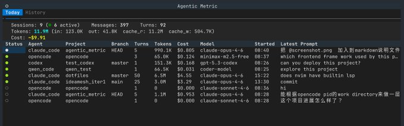
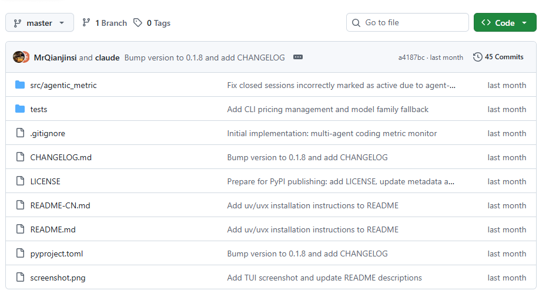

很多人现在用 Claude Code、Codex 写代码，已经不是“好不好用”的问题了。
是真花钱，而且经常花得没感觉。
开着写一下午，Token 到底跑了多少，哪次对话最贵，今天总共烧了多少钱，平时其实很难顺手看清。大多数时候，都是用完了再回头猜。
我点进去看了下，Agentic Metric 做的事很直接：不给你讲概念，也不搞云端后台，就是在本地盯着这些 AI 编程工具的消耗情况。
终端里直接开一个实时仪表盘。
哪个智能体进程正在跑，Token 用了多少，费用大概多少，界面上都能直接看到。对那种一边开 Claude Code、一边挂 Codex，偶尔还混着 Copilot、OpenCode 的人，这种东西其实很实用，因为你的钱往往不是花在一个工具上，而是散着漏。
它支持的范围也挺广，Claude Code、Codex、VS Code Copilot、OpenCode、Qwen Code 这些主流工具都能看。

而且数据不上传，全部留在本地。这个点我觉得比“功能多”更重要一点。毕竟你盯的是使用习惯、调用频率、费用节奏，这类数据很多人本来就不想交给第三方。
另一个比较顺手的地方，是它不只看实时。
还能拉 30 天历史趋势、每日汇总。你会很快看出来，自己到底是哪几天写得最猛，还是哪几个模型 quietly 把账单抬上去了。内置常见模型价格表，自己也能补定价、覆盖定价，适合那种模型切得比较杂的人。

甚至它还能把费用摘要塞进 tmux、vim 状态栏里。
这就很像一个开发环境里的小电表，抬眼一扫，今天已经花了多少，心里立刻有数。
如果你同时用好几个 AI Coding 工具，又一直想把 Token 和费用这件事看明白，Agentic Metric 确实值得装一个。
GitHub地址：MrQianjinsi/agentic-metric